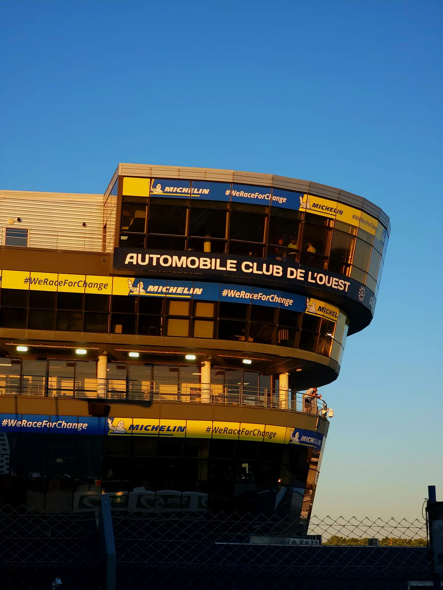

04/Parcours
Une PME onze mois
par an, une
multinationale
le douzième.
Alternant technicien systèmes & réseaux à l'Automobile Club de l'Ouest, en BTS SIO option SISR à la FAB'Academy du Mans.
J'y interviens sur le support utilisateurs, des projets d'infrastructure et l'administration d'un environnement Microsoft 365 hybride, aux côtés de serveurs Linux et de l'administration réseau.
Le temps d'une épreuve, le service se transforme en centre de commandement : l'infrastructure doit encaisser une charge sans commune mesure avec le reste de l'année, sans fenêtre de reprise, puisque la course ne s'interrompt pas.
- Formation
- BTS SIO
- Option
- SISR
- Certification
- ANSSI
- Promotion
- 25—27

Le contexte donne la mesure, les réalisations montrent les décisions. Quatre missions menées en production, avec ce que j'ai choisi de ne pas faire.
Voir les réalisations